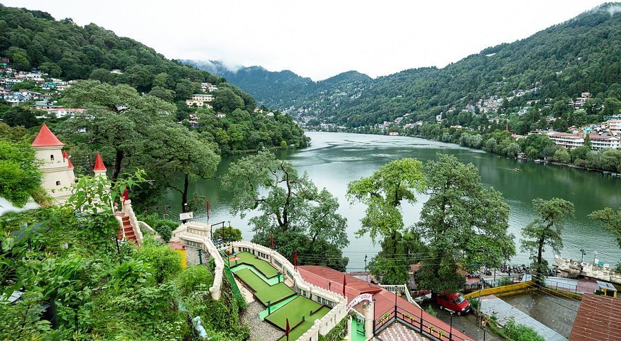
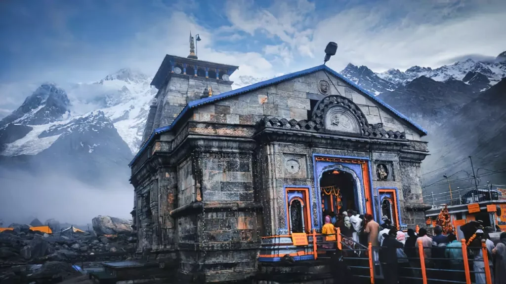
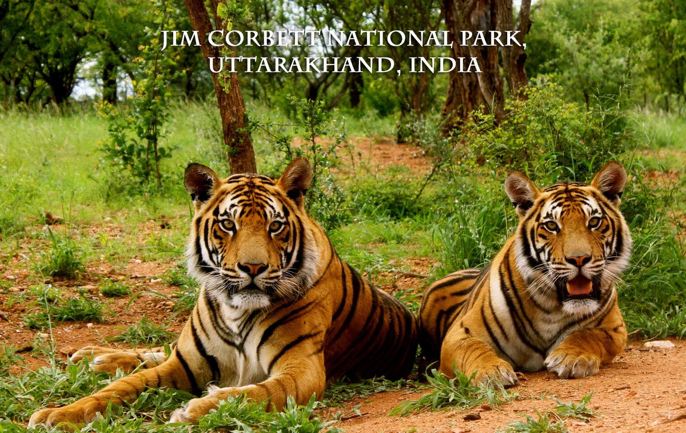

Top Destinations
Rishikesh
Rishikesh, the "Yoga Capital of the World," is a spiritual and adventure hub on the banks of the Ganges River. Famous for yoga retreats, ashrams, and thrilling activities like river rafting, it’s also home to iconic landmarks like Laxman Jhula and the Beatles Ashram.

Haridwar
A holy city, Haridwar is renowned for the sacred Ganga Aarti at Har Ki Pauri, where thousands gather to witness the mesmerizing ritual. It’s a key pilgrimage site with temples like Mansa Devi and vibrant markets.

Nainital
Nainital, a picturesque hill station, is centered around the serene Naini Lake. Popular for boating, it also offers attractions like Naina Devi Temple, Snow View Point, and the High Altitude Zoo, perfect for nature lovers.
Mussoorie
Known as the "Queen of the Hills," Mussoorie is a charming hill station with attractions like Kempty Falls, Gun Hill Point, and Camel’s Back Road. It’s ideal for scenic walks and stunning views of the Doon Valley.

Kedarnath
Kedarnath, part of the Char Dham Yatra, is home to the ancient Kedarnath Temple, one of the 12 Jyotirlingas. Set amidst towering Himalayan peaks, it’s a spiritually enriching destination for pilgrims.
Valley of Flowers
A UNESCO World Heritage Site, the Valley of Flowers is a vibrant meadow blooming with colorful flora from July to September. A trekker’s paradise, it’s located near Hemkund Sahib and offers stunning views.

Jim Corbett National Park
India’s oldest national park, Jim Corbett is famous for its Bengal tigers and diverse wildlife. It offers thrilling jeep safaris, birdwatching, and nature trails, making it a haven for wildlife enthusiasts.
Auli
Auli is a premier skiing destination in winter and a trekking hub in summer. With breathtaking views of Nanda Devi and a scenic cable car ride from Joshimath, it’s a must-visit for adventure seekers.